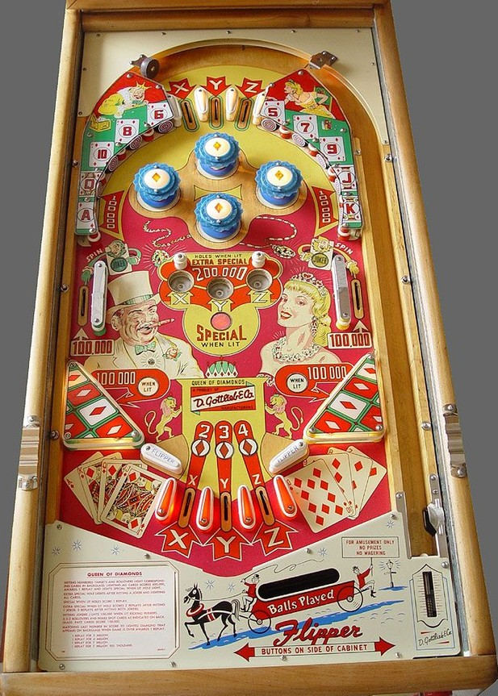

These two games use the same layout, rules, and scoring, despite the very different themes. Descriptions and terminology in the main part of the guide will focus on Queen of Diamonds, and each feature's World Beauties equivalent will be listed at the end.
Queen of Diamonds is not to be confused with Queen of Hearts (1952), King of Diamonds / Diamond Jack (1967), or Diamond Lady (1988), all by Gottlieb.
The main goal of the game is to collect all 13 playing cards in the diamonds suit. Ace, Queen, 10, 8, and 6 correspond to upper left standup targets; 5, 7, 9, Jack, and King correspond to upper right standup targets; 2, 3, and 4 are located on the three out lanes between the flippers. There is also a roto-wheel in the backbox of the game, which spins at the start of each ball or when making either middle side lane, which designates three playing cards as X, Y, and Z. Making an X, Y, or Z top lane, out lane, or gobble hole spots the selected card. Collecting Ace, King, Queen, or Jack scores 100,000, and collecting any other card scores 10,000. Gobble holes also score an additional 200,000, but end the current ball. Collecting all 13 cards in one game scores 400,000 points and one Special, and lights all three gobble holes red to score a Special for the rest of the game. Special can also be set to award a free game and cannot give points or additional balls.
There are two jokers on the game: one green and one yellow. The green joker is earned by making the middle left side lane, and the yellow joker is earned from the middle right side lane. The green and yellow jokers are also possible faces on the roto-wheel, meaning they can be spotted by the X-Y-Z feature. Collecting the green joker lights the left slingshot for 100,000 points for the rest of the game, and collecting the yellow joker does the same for the right slingshot. If at least one joker and all 13 playing cards are collected, one of the gobble holes may be lit white for Extra Special, which scores 1 or 2 more Specials (on top of the normal red Special) depending on whether 1 or 2 jokers are collected. There may not be a gobble hole lit white, and the Extra Special is toggled/moved whenever the roto-wheel is respun (at the start of a ball or after making a side lane).
Pop bumpers always score 10,000. There are no in or out lanes on the sides of the game; slingshots extend from the flipper hinges to the side walls of the game. Instead, there is a quite wide flipper gap with 3 rollover lanes between the flippers. The posts that separate the between-flippers area into three lanes are actually made from the same parts as other flippers, including the associated rubbers; they just can't be moved by the player. This means the nudging is surprisingly effective for bouncing balls back into play when they are otherwise nowhere near the actual flippers.
There is no conventional end of ball bonus, though all balls will end with an X-Y-Z award, plus either the 2, 3, or 4 card draining down the center out lanes, or 200,000 points plus a possible Special or Extra Special at the gobble holes. There is no extra ball feature. Tilt ends game. Match is determined by which multiple of 10,000 points has a lit diamond next to it, which is only revealed after the final ball has been played.
The below picture of Queen of Diamonds' playfield was taken from the Internet Pinball Database, where it was originally provided by Raphael Lankar.

The playing cards in the order Ace-King-Queen-Jack-10-9-8-7-6-5-4-3-2 have been replaced by the numbers 1-2-3-4-5-6-7-8-9-10-11-12-13 respectively (the order realls is reversed). Collecting a 1, 2, 3, or 4 scores 100,000, while collecting any other number scores 10,000.
The X-Y-Z feature is now called the A-B-C feature, but functions identically.
The green and yellow jokers on the left and right of the game are now replaced with yellow and white trophies. They work the same as Queen of Diamonds' jokers.
The three center out lanes on World Beauties are labelled 11-12-13 from left to right. This would correspond to Queen of Diamonds' center out lanes being 4-3-2, when they are actually 2-3-4 instead. This appears to be the only rules/wiring difference in the games (and a very minor one at that).